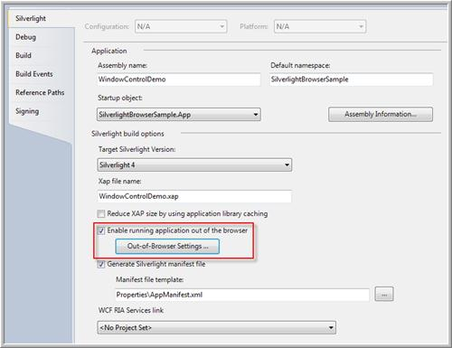
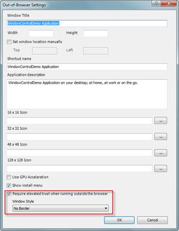
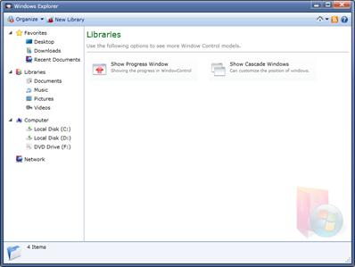

Silverlight 4.0 allows customization for Out-of-Browser Window support. This can be easily done by using Syncfusion WindowControl, since it has a complete customization support.
Use Case Scenarios
Using Out-of-Browser Window Support in a WindowControl, any Out-of-Browser Window can be easily customized as WindowControl has a complete customization.
Enabling Out-of-Browser Support in a Window Control Application
The following steps explain how to enable an Out-of-Browser support in a Silverlight 4.0 application.
1. Select the Properties pane from the Project and enable the Out–of-Browser option.

Figure 1105: Project properties
2. Open the Out–of- Browser settings and set the Window Style as No Border.

Figure 1106: Out of Browser settings window
3. Place the Silverlight WindowControl as the root element of the application as shown below.
|
[XAML]
<syncfusion:WindowControl x:Class="SilverlightBrowserSample.SilverlightControl1"
|
4. The WindowStateChanging event should be handled, so that you can cancel the default state changes of WindowControl.
|
[C#]
private void window_OnWindowStateChanging(object sender, WindowStateChangingEventArgs e)
|
5. Also, disable the default Title bar thumb and resize grip thumb, so that you can resize or drag the Out-of-Browser Window.
|
[XAML]
public override void OnApplyTemplate()
|
6. Handle the DragMove and DragResize as follows.
|
[C#]
private void title_MouseLeftButtonDown(object sender, MouseButtonEventArgs e)
|

Figure 1107: Out of Browser Window
Appearance
The Out-of-Browser Window using Syncfusion Silverlight WindowControl can be easily customized and it is explained under the section Blendability.
Sample Link
A sample application that illustrates System Menu Support in WindowControl is distributed along with the Essential Tools installation and can be found at:
<Samples installed location>\Syncfusion\EssentialStudio\Version Number\Silverlight\Syncfusion.Tools.Silverlight.Samples